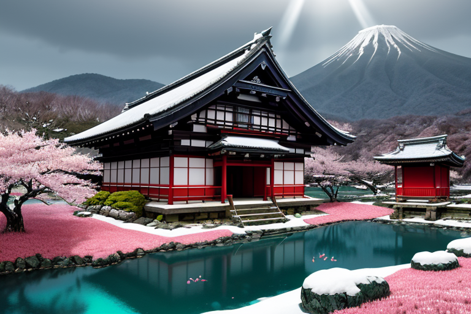
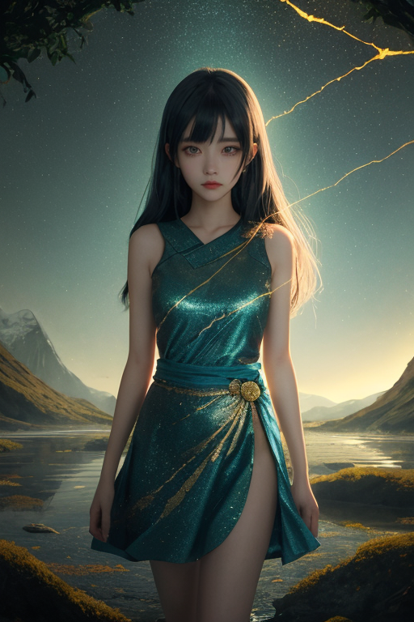
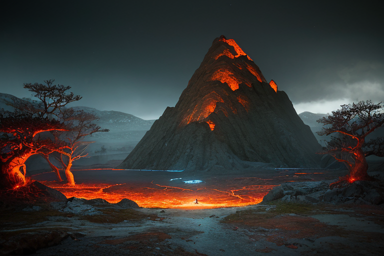
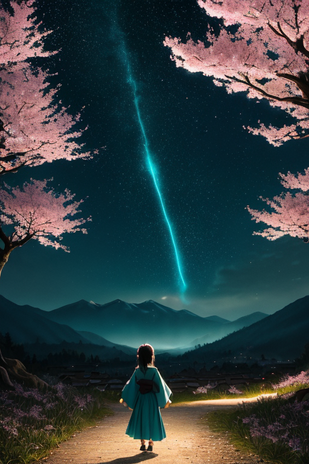
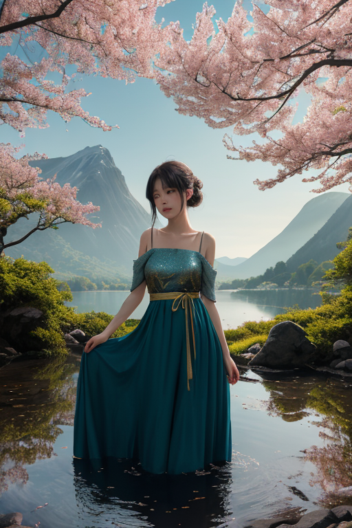

第一章 現実の福島
あなたはまだ気づいていない。この土地にも、王がいることを。
鶴ヶ城の白亜の天守が、磐梯山の稜線を背景に静かに佇んでいる。春は花見山に桃色が咲き乱れ、冬は大内宿の茅葺屋根が雪に埋もれる。赤べこが首を振り、喜多方の町では朝からラーメンの湯気が立ち上る。これらはすべて、現実の福島だ。しかし、この静謐な風景の下には、別の現実が封印されている。2011年3月11日、この地に刻まれた深い「裂け目」だ。それは目に見える風景を変え、見えない分断を生んだ。
五色沼の水は、時にエメラルドグリーンに、時にコバルトブルーに色を変える。その神秘的な彩りは、地下を流れる複雑な水脈と鉱物の作用によるものだ。人々はその美しさに息を呑むが、王は知っている。この沼が、大地の深部で今も続く、目に見えない「調整」の結果であることを。歪みは消えない。ただ、沼の色のように、形を変えて現実に織り込まれている。
王はここで、世界で最も重い「微調整」を続けている。

第二章 歪みの兆候
磐梯山の裾野、五色沼のほとりで、王は微かに目を閉じた。掌に伝わるのは、地中深くに封じられた「核」の、かすかな脈動だった。十年以上、幾重にも張り巡らせた封印の結界に、ごく小さな、しかし確かな揺らぎが生じ始めている。それは、かつての事故の傷跡が完全には癒えていないことの証であり、歪みそのものが新たな均衡を求めて蠢いている兆候でもあった。
「殿下」
リヴィアが低く呼びかける。彼女の手から放たれる再生の光は、沼の水面を蒼く染め、揺らぎを一時的に鎮めようとする。だが、光はかつてのように純粋ではなく、内部に金糸のような亀裂が走っている。王自身の感情──事故を防げなかった悔恨と、再び同じ過ちを繰り返さぬという強すぎる決意──が、調整の精度を蝕み始めていた。
「分断は、外側だけではない」
王は呟く。自らの内なる分断が、この封印の劣化を加速させていることを、彼は痛いほど理解していた。壊れた世界を再設計するためには、まず自らの心の亀裂を縫わねばならない。その途方もない作業が、今、蒼と金の紋章に重くのしかかっている。

第三章 王の葛藤
磐梯山の裾野、五色沼の水面は、今日も静かに異なる色をたたえていた。青、緑、赤、濁った茶。それは美しい自然の神秘であると同時に、火山活動という地の歪みの産物でもある。フクシマル・リボーンはその畔に立ち、自らの内なる「色」を見つめていた。悔恨の蒼。決意の金。二つは混ざり合わず、彼の内で激しく反発し合う。
「王よ、封印の歪みが増しています」
リヴィアの声に、彼は目を閉じた。手に持つ蒼金の紋章が、微かに軋む。2011年以来、彼がこの地に課した「核封印」は、巨大な歪みそのものを凍結し、拡散を食い止めるための苦渋の選択だった。しかし、封印は永続しない。圧力は蓄積し、いつかより大きな形で噴出する危険を孕んでいる。
解放すべきか。維持すべきか。
解放すれば、封じられた歪みが一気に放出され、新たな混乱を招くかもしれない。だが、そのエネルギーを制御し、ゆっくりと「再生」へと導く道も、理論上は存在する。彼はそれを「再設計」と呼びたいと願った。しかし、失敗したらどうする。彼の判断が、再びこの地を傷つけるのか。
彼は赤べこを見つめた。倒れても起き上がる、その不屈の形に、会津魂を見る。自らの内なる分断こそが、最大の敵だった。

第四章 妖精との対話
「王よ、その選択は、あなただけのものではありません」
リヴィアの声は、花見山の夜桜に包まれるように静かだった。彼女は封印の歴史を語り始める。戊辰戦争。白虎隊の悲劇は、あまりにも鋭い「分断」の歪みを生んだ。その傷を鎮めるため、当時の王は、痛みと共にある「均衡」を選んだ。2011年。その均衡は、想定を超える巨大な歪みによって破られた。次の王であるフクシマルは、暴走するエネルギーを「封印」という形で凍結せざるを得なかった。
「封印は、破壊を止めるための応急処置でした。しかし、それは時間を止めただけで、癒やしにはなっていない」
ヒバリナが枝から囁く。
「でもね、ここには桃の花が咲き、ラーメンの湯気が立ち上る。人々は歩みを止めなかった。封印の中に、ほんの少し、希望の種は混ざっていたんです」
フクシマルは拳を握る。封印を解けば、古い痛みと新しい傷が一度に噴出する。しかし、このままでは、土地も人も、真の再生へと踏み出せない。
「……再設計とは、過去を消すことではない」
リヴィアが彼の横に立つ。
「痛みを認め、その力をどう未来へ織り込むか。それが、あなたに問われていることです」

第五章 微調整と余韻
磐梯山の裾野、五色沼の水面は、今も静かに色を変えていた。フクシマルは、封印の亀裂から漏れ出す微かな光を、自らの手で縫い合わせた。完全な修復ではない。歪みを完全に消すことは、王にもできない。彼が行ったのは、ほんのわずかな「遅延」だった。噴出しようとする古い痛みを、数十年、いや百年単位で分散させる微調整。それは、この土地に、痛みと向き合い、織り込むための時間を与える行為に他ならない。
代償は大きかった。彼の体を構成する光の粒子の幾つかが、封印の修復材として溶け込み、二度と戻らない。感情を獲得した王としての「存在」が、少し薄まった。リヴィアが支える腕に、彼はかすかに微笑んだ。
「これで……いい。急がなくていい。一歩ずつ、歩けるように」
花見山の桜は、また次の春を待つ。鶴ヶ城の石垣は、静かに歴史を見つめる。人々の歩みは、緩やかだが、確かに前を向いていた。壊れた世界の再設計とは、完璧な修復ではなく、傷と共に在り続けるための、果てしない微調整の連続なのだ。
あなたの町にも、王がいる。